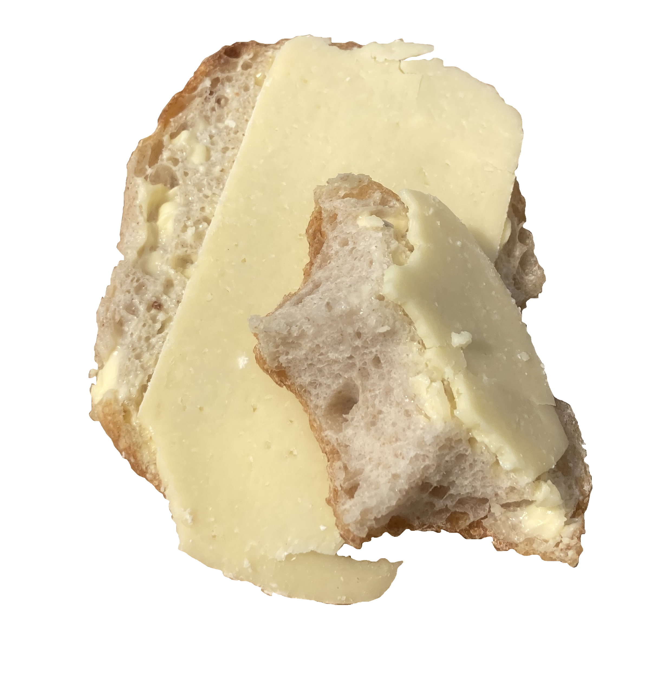
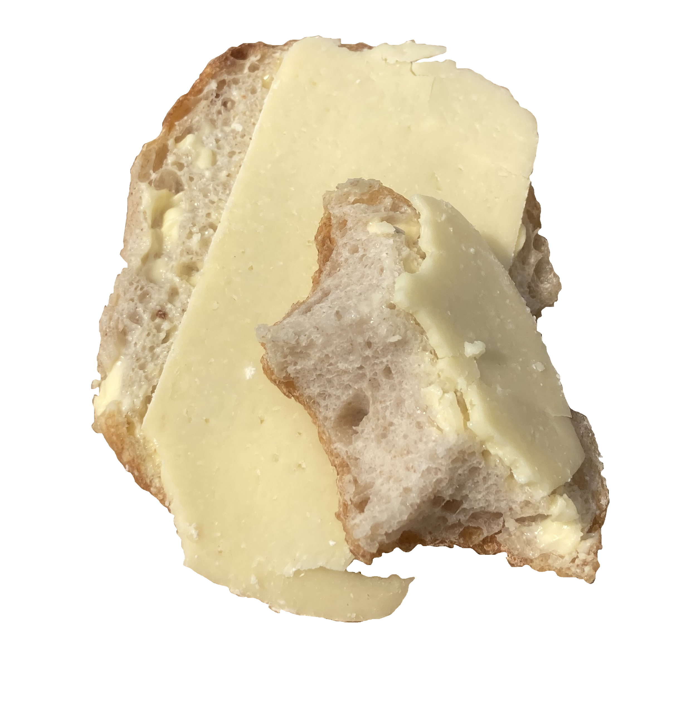
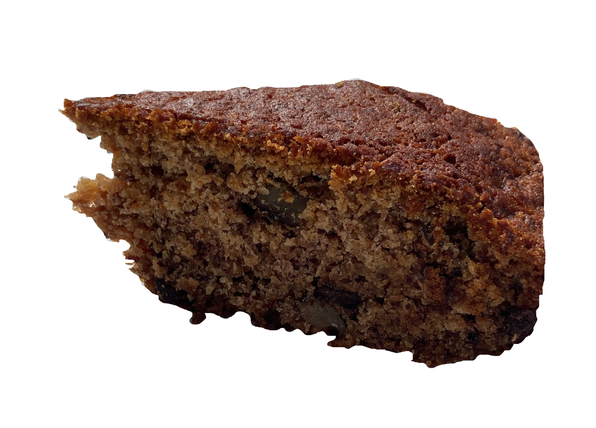

Kardemommesnurre & Tea
08.06.2025
Pastery Rating:
8.5/10
Tea Rating:
5/10

There is one thing that I love more than bmo's: Kardemommesnurre.
This morning, after biking to the center with a coffee in my bag, I arrived at "Skipper Bageri" for my sunday pastery.
The Kardemommesnurre was soft and chewy but lacked a tad bit of cardamom butter which made it almost a bit too dry and not as flavourful as I would have wished it to be.
Even if not memorable, it remains a perfectly delicious Kardemommesnurre which I enjoyed with my coffee as I wandered through the rows of the fleamarket.
Three fleamarkets later, I sat down for a tea at "The Laundromat Café" with a new scarf and shirt in my bag and an empty coffee thermos. The place is nice but the tea was mid for something of that price... I tried the banana cake my friend got, it was very good so I must give them that.
Bolle med Ost (again)
05.06.2025
Rating:
9.5/10
 

"Batting Bakery" was unfortunately out of bolle today which gave me the opportunity to try a new bakery! The bread was good, although the crust wasn't as crunchy I would have liked it to be, but the inside was soft and chewy. The amount of butter was perfect and the cheese quality was by far better than at "Batting Bakery"; much more flavorful. I must say though, although I enjoyed the cheese at first, it was a bit too strong for my taste after a few bites. It was a weird mix with my coffee. Overall, a great discovery and a great experience, I enjoyed it after a swim in the sea with my crosswords. I will return to try their baguette which apparently won the "Best Baguette in Denmark 2024" award.
Bolle med Ost
30.05.2025
Rating:
10/10
.png)
Everything a bmo should be - the bread is crunchy on the outside, soft inside but chewy enough that you have to work for it. A great sourdough bun ! Generous with the butter adding softness to the bread and providing adhesion for the cheese which is in my opinion the perfect balance of aromas, not too tangy yet still flavorful. The bakery itslef being on the way to the beach means that it can be enjoyed in the salty sea air adding valuable sents enhacing flavor. Overall, a fantastic experience, would return to "Batting Bakery" anytime!
Marika's Gluten Free Banana Bread
28.05.2025
Rating:
20/10 (according to Marika)
Actual Rating:
8/10
In just one week, the Monoma kitchen oven has been working day and night to keep up with Marika's banana bread cravings! As I type this, banana bread batch number six is already being debated... I've got to say, for something gluten-free, it's shockingly delicious! Just cheeky enough yet not too sweet, the kind of treat that makes it impossible to stop at just one slice.
Ingredients:
- 4 overripe bananas
- 1/3 cups melted butter
- 3/4 cups sugar
- 1 egg
- 1 tsp vanilla extract
- 1 1/2 cups gluten-free flour
- 3/4 tsp baking soda
- 3/4 tsp baking powder
- 1/2 tsp salt
- wallnuts and chocolate


Mash the bananas, and add all the wet ingredients and sugar to the same bowl. In a seperate bowl, mix the dry ingredients before incorporating them to the wet ingredients. Cut the wallnuts and chocolate into small chunks before adding them to the batter. Butter the loaf pan, pour the batter into it, and bake for 50 minutes at 180C. Let it cool for at least 15 minutes before serving.